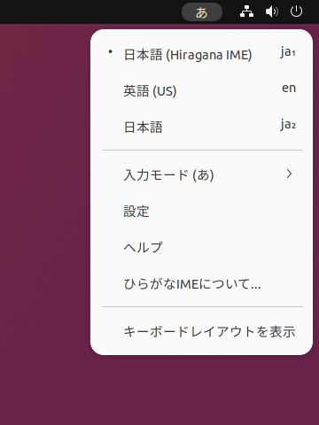
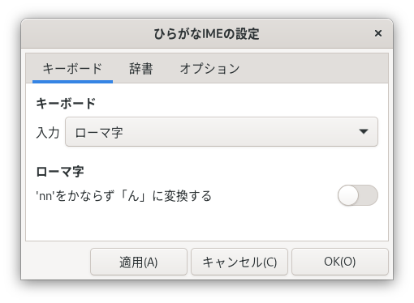
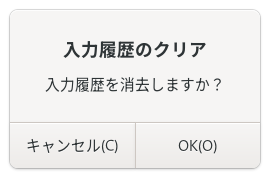
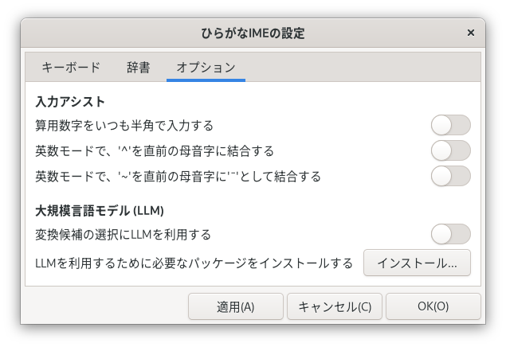

設定のかえかた
「ひらがなIMEの設定」ウィンドウ
「ひらがなIME」の設定は、「ひらがなIMEの設定」ウィンドウでおこないます。トップバーのキーボード メニューから[設定]をえらぶと、「ひらがなIMEの設定」ウィンドウがひらきます。


「ひらがなIMEの設定」ウィンドウには、つぎの３つのタブがあります。
| 説明 | |
|---|---|
| キーボード | ローマ字入力とかな入力のきりかえをおこないます。 |
| 辞書 | 使用する漢字辞書をえらびます。 |
| オプション | 追加の設定をします。 |
設定した内容は、[OK]ボタンか[適用]ボタンをおせば「ひらがなIME」にすぐ反映されます。
キーボード タブ
キーボード タブでは、日本語の入力方法を設定します。
キーボードの打ちかたを「入力方法」ドロップダウンリストからえらびます。つぎの３種類からえらべます。
| 入力方法 | 説明 |
|---|---|
| ローマ字 | ローマ字で入力します。 |
| かな (JIS配列) | JISかな配列をつかって入力します。 |
| ニュースティックニーかな配列をつかって入力します。 |
日本語の文章をキーボードで入力するときは、かな入力とローマ字入力がよくつかわれています。ローマ字入力は小学校３年生から学校でおそわります。かな入力であれば、ローマ字がわからなくても、つかうことができます。
'nn'をかならず「ん」に変換する
「ん」をいつも「nn」で入力したいときは、『'nn'をかならず「ん」に変換する』をオンにします。
ワープロでは、「nn」と入力すると「ん」になる便法がつかわれてきました。ふたつめの「n」は、日本語キーボードではおしにくい「'」のかわりです。ローマ字のつづりかたとしては、ただくしありません。現在は、このワープロの方式をさだめたJIS規格は廃止されています。
- 参考: 『JIS X 4063の廃止』。
辞書タブ
辞書タブでは、漢字変換につかう辞書を設定します。「ひらがなIME」は、おとな用の漢字辞書のほかに、小中高生用の辞書を用意しています。

漢字辞書
使用する漢字辞書は、[漢字辞書]ドロップダウンリストをひらいてえらびます。学年別の辞書は、平成29年の「音訓の小・中・高等学校段階別割り振り表」にそって構成されています。学年があがるごとに、学習する漢字の数とともに、辞書に登録されている熟語の数もふえていきます。
| 漢字辞書 | 熟語数 |
|---|---|
| 小学校１年生 | 730 |
| 小学校２年生 | 3,210 |
| 小学校３年生 | 6,315 |
| 小学校４年生 | 9,554 |
| 小学校５年生 | 12,573 |
| 小学校６年生 | 14,796 |
| 中学生 | 29,974 |
| 高校生 | 32,077 |
| おとな | 34,594 |
(2024年8月時点)
辞書は、よみ手の学年などにあわせてえらんでください。中学生以上用の辞書では、人名や地名については、「常用漢字表」にのっていない漢字も使用しています。
個人用辞書名
個人用の辞書に登録しておけば、標準の漢字辞書にない単語も変換できるようになります。個人用辞書は、複数のファイルをつかいわけることができます。[個人用辞書名]テキストボックスには、利用したい個人用辞書のファイル名を指定します。はじめは my.dic というなまえになっています。個人用の辞書ファイルは、ディレクトリ ~/.local/share/ibus-hiragana/ のなかに保存されています。
個人用辞書ファイルは、[編集]ボタンをおすと編集できます。ファイルのかきかたについては、このページの「個人用辞書ファイルのかきかた」で説明しています。
おくりがなの「許容」をつかう
[おくりがなの「許容」をつかう]スイッチをオンにすると、『送り仮名の付け方』で許容されている基本的なおくりがなをつかえるようになります。オフにしているばあいは、許容はつかわず、学校でならう本則だけをつかいます。
例) おくりがなの「許容」をつかうと、下の表にしめしたような変換ができます。
| 本則 | 許容 |
|---|---|
| お変換とす → 落とす | おと変換す → 落す |
| おこな変換って → 行って | おこ変換なって → 行なって |
| とど変換けで変換 → 届け出 | とどけで変換 → 届出 |
「行って」と「行って」は本則のままではふりがながないと区別ができません。ぎゃくに、漢字をよくしっているひとが「落す」をよみあやまることはありません。和語（ほんらいの日本語）に漢字をあててかくのは、なかなかむずかしいことです。この手びきでは、和語はなるべくひらがなでかくようにしています。
入力履歴
変換候補ウィンドウでは、よくつかう同音異義語やよみを短縮したことばが一覧のはじめのほうにきます。これを初期状態にもどしたいときは、[クリア...]をクリックします。そして、つぎのメッセージボックスが表示されたら、[OK]ボタンをおします。

オプション タブ
オプション タブでは、入力を補助する機能の設定ができます。

算用数字をいつも半角で入力する
オンにすると、かな入力モードでも算用数字を半角で入力します。
| 設定 | 例 |
|---|---|
| オフ | １２、３４５。６７８ |
| オン | 12,345.678 |
英数モードで、'^'を直前の母音字に結合する
日本語を訓令式ローマ字でかきあらわすときは、このスイッチをオンにすると便利です。
英数モードで^を入力したときに、直前の文字が母音字であれば、母音にサーカムフレックスをつけます。
- 例: a^ → â
直前の文字がサーカムフレックスつきの母音字のときに、^を入力すると、直前の文字を母音字と単独のサーカムフレックスにわけます。
- 例: â^ → a^
英数モードで、'~'を直前の母音字に'¯'として結合する
日本語をヘボン式ローマ字でかきあらわすときは、このスイッチをオンにすると便利です。
英数モードで~を入力したときに、直前の文字が母音字であれば、母音にマクロンをつけます。
- 例: a~ → ā
直前の文字がマクロンつきの母音字のときに、~を入力すると、直前の文字を母音字と単独のチルダ(~)にわけます。
- 例: ā~ → a~
変換候補の選択にLLMを利用する
オンにすると、文脈中の変換候補の出現確率を計算し、もっとも確率のたかい候補をあらかじめ選択しておきます。たとえば、「のぼる」を変換するときは、文脈に応じてつぎのように選択されている候補がかわります。
- 山に登る
- 日が昇る
注意: 大規模言語モデルは候補の出現確率を計算しているだけです。つかいたい候補がいつもえらばれているわけではありません。この機能ばデフォルトではオフになっています。また、この機能をはじめて有効にするとき、追加でインストールしないといけないファイルがあります。くわしくは「大規模言語モデルを利用するときの追加のインストール」をみてください。
個人用辞書ファイルのかきかた
個人用辞書ファイルは、つぎのような形式で単語を保存したテキストファイルです。
; セミコロン(;)ではじまる行はコメントです。
; 単語は、「よみ」, 半角スペース, そのあとにスラッシュ(/)で語をかこんで登録します。
きれい /綺麗/
; 先頭にマイナス(-)をつけると、システム辞書内の単語をとりけすことができます。
-きれい /奇麗/
; おなじよみの語は一行にまとめて登録できます。
かいざん /改竄/改ざん/
; おくりがなのある語のよみは、漢字におきかえる部分だけをかいて、水平バー（―）でとめます。
ささや― /囁k/
あお― /碧i/
おくりがなのある語の登録のしかた
「ひらがなIME」の辞書におくりがなのある語を登録するときのかきかたは、つぎのとおりです。「よみ」の部分には、漢字におきかえる部分だけ、かなでかいて、水平バー（―）でとめます。「語」の部分のかきかたは、以下のように品詞や活用形によってかわってきます。
五段活用の動詞
「語」の部分には、漢字，（もしあれば）活用語尾のまえまでのおくりがな，活用語尾の記号（kgstnbmrwのどれかひとつ）をかきます。
| 行 | よみ | 語 |
|---|---|---|
| カ行 | か― | 書k |
| ガ行 | およ― | 泳g |
| サ行 | ち― | 散らs |
| タ行 | う― | 打t |
| ナ行 | し― | 死n |
| バ行 | あそ― | 遊b |
| マ行 | あか― | 赤らm |
| ラ行 | あず― | 預かr |
| ワア行 | あ― | 会w |
上一段活用/下一段活用の動詞
「語」の部分には、漢字，活用語尾のさいしょの一文字（イ段もしくはエ段の文字）までのおくりがな，活用語尾の記号（1）をかきます。
| 活用 | よみ | 語 |
|---|---|---|
| 上一段 | お― | 起き1 |
| 下一段 | み― | 見え1 |
形容詞（イ形容詞）
「語」の部分には、漢字，（もしあれば）活用語尾のまえまでのおくりがな，活用語尾の記号（i）をかきます。
| よみ | 語 |
|---|---|
| あか― | 赤i |
| つめ― | 冷たi |
形容動詞（ナ形容詞）
「語」の部分には、漢字と語幹部分のおくりがなをかきます。
| よみ | 語 |
|---|---|
| あき― | 明らか |
| しず― | 静か |
そのほかの語のおくりがな
「語」の部分には、漢字とおくりがなをそのままかきます。
| よみ | 語 |
|---|---|
| ひと― | 独り |
| すこ― | 少し |